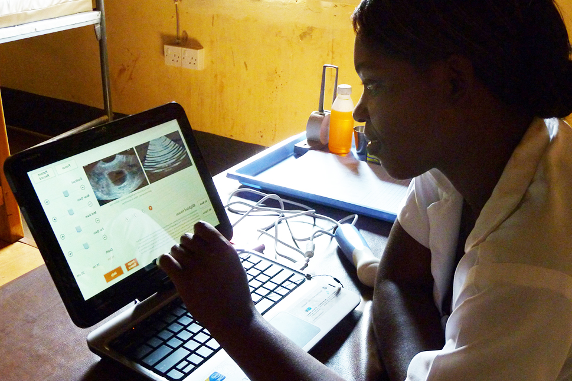
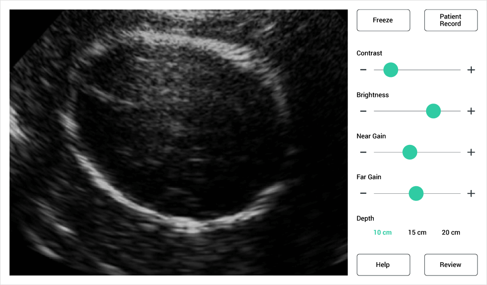
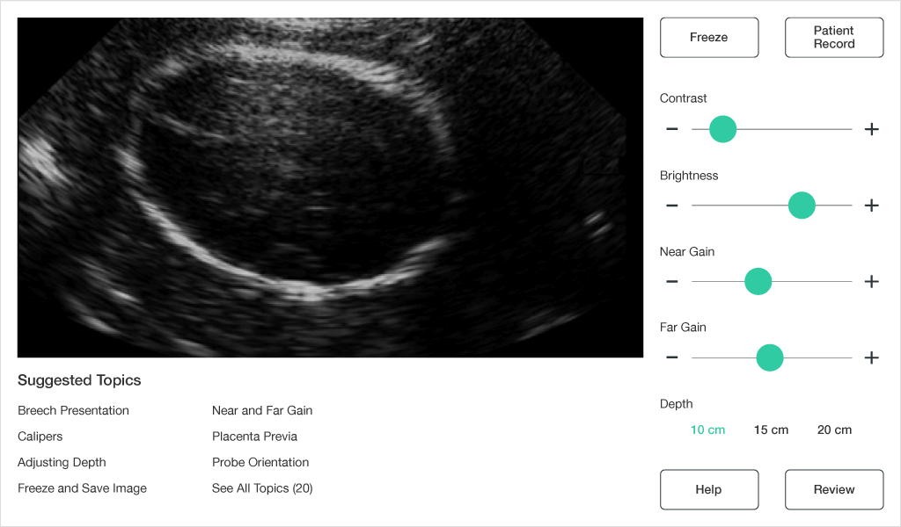
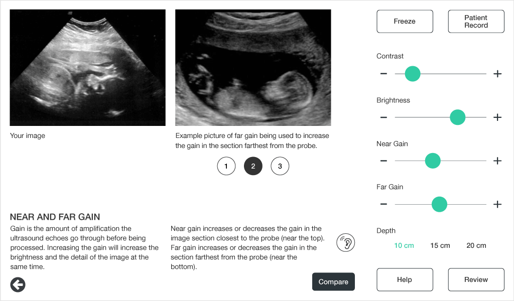

Ultrasound for Ugandan Midwives
Gates Foundation | Kampala and Seattle

Goal
To develop the UI of an ultrasound device for midwives in low-resource regions, ensuring they could perform scans confidently and accurately while reducing cognitive load during critical tasks.
Where we started
Ultrasound is a safe and effective way to identify pregnancy complications. Unfortunately, the technology is scarce in many regions because of high costs.
From 2010 to 2012, I researched and designed for a portable, low cost ultrasound device to help decrease maternal death rates in rural Uganda.
Research methods
- Contextual inquiries with radiologists in Seattle hospitals
- Field trips to Uganda, conducted interviews with Ugandan mothers and midwives working on the front-line to understand their experiences with prenatal care and ultrasound screenings
What we built
Based on research, we built a simplified ultrasound application that utilized an Interson USB probe attached to a netbook. We iterated until radiologists, sonographers, and midwives both in the U.S. and Uganda verified that the device could successfully diagnose the three most common complications.
The device cost was $3,500 using a modular off-the-shelf approach rather than an all-in-one system. We also added an integrated contextual help feature that helped supplement the limited sonography training received by the midwives, helping to answer diagnostic questions when a radiologist isn't available.

Scanning fetus head

Suggested learning topics

Comparing ultrasound images
Publications
I co-authored three academic papers:
- W. Brunette; W. Gerard; M. Hicks; A. Hope; R. Anderson; G. Borriello; B. Kolko; R. Nathan. "Portable Antenatal Ultrasound Platform for Village Midwives." ACM Computing for Development (DEV), December 2010.
- A. Hope; M. Hicks; W. Gerard; P. Prasad; K. Saville; W. Brunette; L. Ham; J. Keh; R. Anderson; G. Borriello; B. Kolko; R. Nathan. "Designing an Intelligent Medical Assistant for Diagnostic Ultrasound." International Conference on Intelligent User Interfaces (IUI), February 2011.
- W. Brunette; M. Hicks; A. Hope; G. Ruddy; R. Anderson; B. Kolko. "Reducing Maternal Mortality: An Ultrasound System for Village Midwives." IEEE Global Humanitarian Technology Conference (GHTC), October 2011.
Impact
- The UI reduced cognitive load, enabling midwives to perform scans more efficiently and accurately.
- Usability testing showed improved task completion, increased confidence, and positive feedback.
- Our work broadened the conversation in the medical community about the need for simplified, lower cost medical technology. GE, Philips, and other medical device companies became aware of our work.
- Our project advisor Beth Kolko started Shift Labs, a company focused on developing low cost medical technology.
Learn more
For more about this work, watch this TEDx presentation from Beth Kolko.